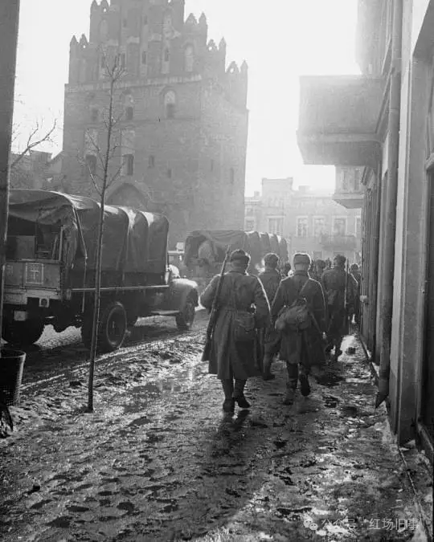
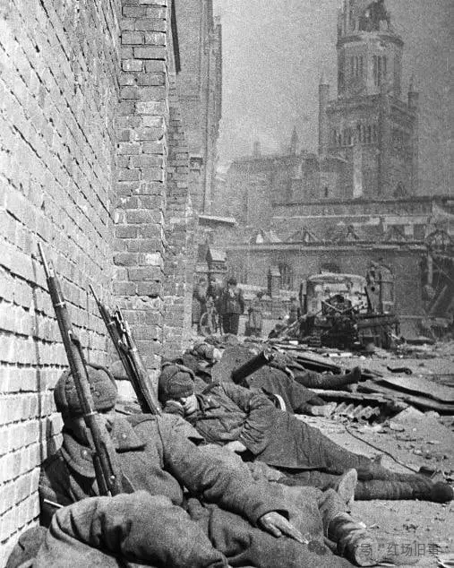
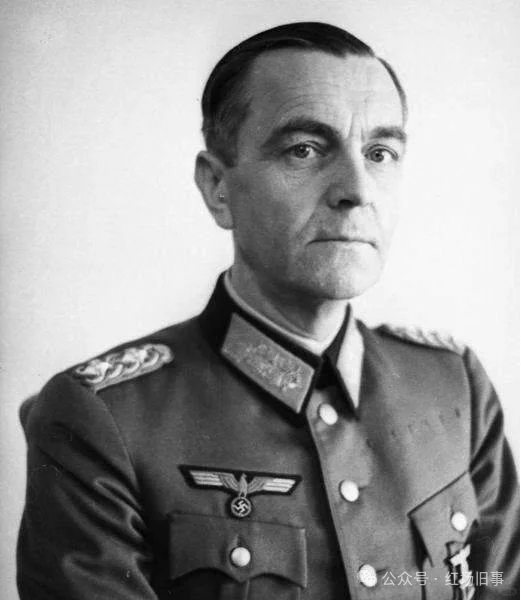

200天、200万人、20万间房屋废墟：人类史上最惨烈战役，为何非打不可？
文字与图片版权归各自权利人所有。 查看公众号原文 ↗
1942年8月23日，伏尔加河燃起来了那天下午，德军600架轰炸机飞过伏尔加河。燃烧弹、高爆炸弹轮番投下，斯大林格勒变成火炬。油库被击中，燃烧的石油流入伏尔加河，河面燃起大火。四万平民死于这一天。停尸房爆满，尸体堆在街道两侧，腐烂的气息飘进每一条战壕。此后整整六个半月，这座城市没有一秒停止过枪声。斯大林格勒战役不是一场战役，是200万人挤进20万间废墟，用每一颗子弹、每一把刺刀，把纳粹德国从进攻的巅峰拽进深渊。这是人类史上最惨烈的战役，也是第二次世界大战最坚硬的转折点。
一、为什么要打斯大林格勒？1942年夏，希特勒的“蓝色行动”目标明确：高加索石油。A集团军群直扑油田，B集团军群掩护侧翼。侧翼有一个障碍：斯大林格勒。这座60万人口的城市是伏尔加河枢纽，也是石油北运的中转站。希特勒最初只想“占领或摧毁”它，但战役打响后，这座以斯大林命名的城市变成了某种象征。

斯大林的第227号命令早已点燃火药桶：“不许后退一步！”溃退部队设督战队，擅离职守者送上军事法庭。一场本可绕过的城市战，变成了两个独裁者的斗兽场。
二、巷战：绞肉机里没有战术德军第六集团军司令保卢斯擅长纸上推演，没打过巷战。苏军第62集团军司令崔可夫指令极简：“把我们的人拉进德军战线。”两军距离缩到手榴弹投掷范围，再缩到刺刀见红。德军飞机不敢投弹，坦克失去仰角，巷战变成单兵对单兵、房间对房间、下水道对下水道的狩猎。马马耶夫岗是制高点，六个半月反复易手15次。墓园每平方米躺着6具尸体。次年春天积雪融化时，山坡是黑色的——不是土，是凝固的血。巴甫洛夫大楼：一名中士和24名战士在一栋四层楼里坚守58天。楼后300米是伏尔加河，援军过不来。58天后，25人只剩3人。

拖拉机厂：工人早上生产坦克，下午开着自己造的坦克上前线，晚上被抬回来时，工牌还在脖子上挂着。苏军士兵平均存活时间24小时，军官3天。第62集团军补充兵员超过10万人次——整建制重建三回。
三、焦土与围困：保卢斯最后的电报1942年11月19日，苏军“天王星行动”，两翼钳击。德军把主力压进城市，侧翼是罗马尼亚、意大利部队——装备差、士气低。苏军130万兵力、近千辆坦克从南北突破，四天内完成合围。第六集团军22个师、30万人成了瓮中之鳖。戈林向希特勒保证：“空军能保障补给！”结果是灾难。每日最低需300吨物资，空运最高120吨，最低不足20吨。1943年1月，士兵日粮一片黑面包、一勺稀汤。马肉吃光，皮革煮过，伤寒爆发，冻死者超过战伤。保卢斯三次请求突围或投降。希特勒三次回复：“不许投降。”1月30日，保卢斯最后一封电报：“全军即将覆没。元首万岁！”希特勒晋升他为元帅——德国历史上从未有元帅被俘，晋升即暗示自杀。1月31日清晨，苏军推进至地下室门口。保卢斯没有自杀。参谋长代表他宣布投降。

希特勒暴怒：“他竟然还活着！元帅怎么能被活捉！”六小时后，北部集群残部投降。战役结束。
四、数字与代价：一代人的消失德军损失：第六集团军30万人，约20万阵亡，9万被俘。被俘者5000余人活到战后遣返。苏军损失：官方数字约120万伤亡，包括47万阵亡、65万受伤。平均每天伤亡超6000人。平民损失：1942年8月斯大林格勒60万居民，战役结束时不足8000人。史学家估算：至少15万平民死于轰炸、巷战、严寒和饥荒。城市毁坏：战前约20万间住宅，战后完整建筑不足2000间。电车轨道扭成麻花，水厂、电厂、桥梁全部炸毁。重建工人说：“我们不是在废墟上盖房子，是在骨灰上种庄稼。”这是苏联一代人的账单。战前苏联约1.96亿人，卫国战争累计动员3400万，损失约2700万军民。斯大林格勒一役占近十分之一。那些死在拖拉机厂门口的工人、死在马马耶夫岗的士兵、死在伏尔加河冰面上的平民，不是统计数字，是真实消失的人。他们有过名字，有过等待回家的家人。他们没有等到。
五、转折：从斯大林格勒到柏林斯大林格勒是地理和心理分水岭。军事上：德军最精锐的第六集团军成建制覆灭。此后，东线主动权永远移交苏军。1943年库尔斯克，德军最后一次进攻失败。外交上：战役结束当天，罗斯福和丘吉尔宣布“无条件投降”原则——他们相信苏联能赢。土耳其、瑞典中断与德贸易，日本彻底放弃北进。轴心国阵营开始解体。心理上：德国国内首次出现战败恐惧。柏林报纸不再刊登东线消息，家属收到的阵亡通知单从每周一叠变成每天几袋。戈培尔喊出“你们想要总体战吗？”——走出体育馆，柏林市民看着面包店越来越短的货架，心里知道答案。斯大林格勒之前，希特勒战无不胜；斯大林格勒之后，希特勒只是在等死。
结语：那座城市后来叫伏尔加格勒1961年，赫鲁晓夫将斯大林格勒更名为伏尔加格勒。城市可以改名，但地下的骨头不会改名。至今建筑工人挖地基，仍能挖出1942年的弹壳、头盔、无法辨认身份的白骨。每年夏天，雨水冲刷马马耶夫岗，坡底的土是红色的。2003年，德国前总理施罗德在马马耶夫岗献花圈：“我代表无数德国人，为德国人在德国名义下犯下的罪行请求宽恕。”一位突围老兵听翻译念完，沉默很久：“六十年了。”斯大林格勒战役不是英雄史诗，不是将帅的封神之战。它是一代人用自己的血肉，铺成了历史的转折点。此后每一条通往柏林的路，都是用苏联军人的骸骨一块一块砌出来的。